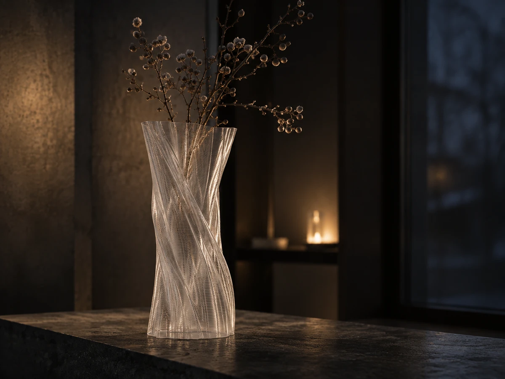
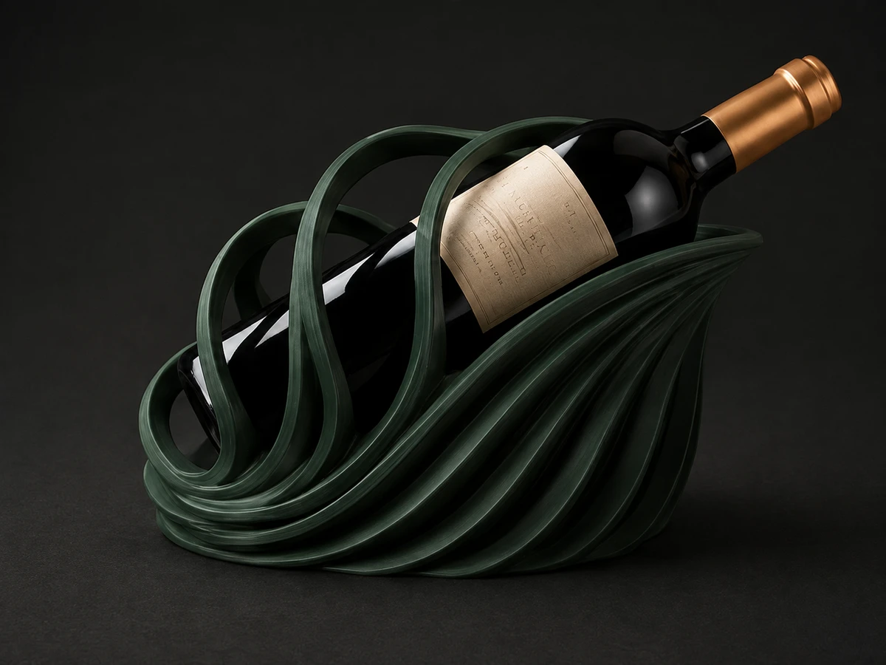

SOLIS
Studium skręconej formy wazonu.
Koncept archiwalny · bez ceny i dostępności.
Archiwum / Poszukiwania
Dawne kierunki pozostają częścią historii pracowni. Nie należą do czteromodelowej kolekcji WINTER 26 i nie są gotową ofertą.
Zobacz WINTER 26 ↗
Studium skręconej formy wazonu.
Koncept archiwalny · bez ceny i dostępności.

Kierunek rzeźbiarskiego stojaka na wino.
Koncept archiwalny · bez ceny i dostępności.
Studium niskiej, organicznej formy.
Koncept archiwalny · bez ceny i dostępności.